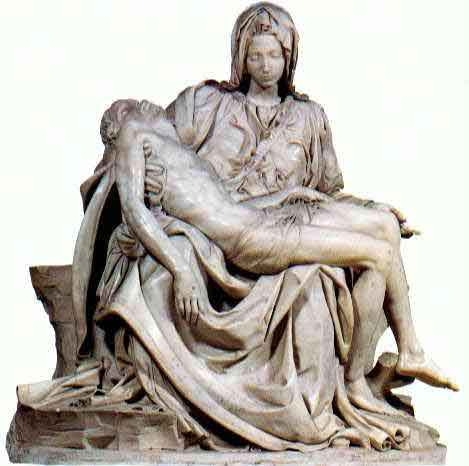

49 MICHELANGELO 1475-1564
Tak pelak lagi, tokoh terdepan dalam seni visual dalam
sejarah adalah budayawan besar masa "Renaissance,"
Michelangelo. Bukan kepalang briliannya selaku pelukis,
pemahat dan arsitek, meninggalkan hasil karya yang mempesona
tiap orang yang melihatnya selama lebih dari empat abad.
Karyanya secara mendalam mempengaruhi perkembangan seni
lukis dan pahat Eropa sesudahnya.
Lahir di Caprese, Itali tahun 1475, kira-kira empat puluh
mil dari Florence. Dari kecil bakatnya sudah tampak jelas,
dan di umur tiga belas dia magang pada pelukis kenamaan
Shirlandaio di Florence. Setahun sesudah itu dia tinggal di
istana Medici milik Lorenzo, penguasa Florence yang
bertindak selaku pelindungnya. Sepanjang kariernya bakat
besar Michelangelo tak diragukan lagi. Dia sering sekali
dipercaya baik oleh para Paus maupun tokoh duniawi merancang
dan membuat karya seni. Meski dia tinggal di banyak tempat,
sebagian terbesarnya dihabiskan di Roma dan Florence.
Meninggal dunia di Roma tahun 1564, tak lama sesudah usianya
lewat delapan puluh sembilan tahun. Setua itu, tak sekalipun
pernah kawin.
Kendati dia tidak segenius Leonardo da Vinci angkatannya
yang lebih tua, keserbabisaan dan kebolehan Michelangelo
tetap amat mempesona. Dialah satu-satunya seniman, mungkin
satu-satunya orang, yang sanggup mencapai puncak prestasi
dalam dua bidang yang berbeda satu sama lain. Selaku pelukis
dia berada hampir di puncak, baik dari segi kualitas
keindahan karyanya maupun pengaruhnya terhadap
pelukis-pelukis yang datang belakangan. Fresko besar yang
menghiasi dinding atas gereja Sistine di Roma merupakan
--tidak bisa tidak-- kreasi seni terbesar sepanjang jaman.
Tetapi, Michelangelo sendiri menganggap dirinya pertama-tama
seorang pemahat, dan banyak kritikus yang menganggapnya
pemahat terbesar yang pernah hidup. Patung "Daud" dan
"Musa"-nya --misalnya-- dan "Pieta" yang mashur merupakan
hasil karya seni yang tak terlampaui.
Michelangelo juga seorang arsitek besar. Salah satu hasil
kerja besarnya di bidang ini adalah rancangan gereja Medici
di Florence. Selama beberapa tahun dia juga jadi kepala
arsitek gereja St. Peter di Roma.
Micheangelo banyak membikin sajak selama hidupnya,
sekitar 300 sajak dapat ditemukan. Soneta-sonetanya dan
sajak-sajak lain diterbitkan sesudah matinya. Kesemua
sajak-sajaknya itu mencerminkan jelas corak kepribadiannya,
dan Michelangelo memang menunjukkan dirinya penyair
berbakat.

"Pieta" di Vatikan Roma
Seperti halnya saya jelaskan dalam artikel tentang
Shakespeare, saya percaya bahwa seni dan para seniman pada
umumnya tidaklah begitu banyak pengaruhnya kepada sejarah
kemanusiaan dan kehidupan mereka sehari-hari.
Atas dasar itulah Michelangelo --tanpa menyisihkan
pengakuan atas kehebatannya selaku seniman genius-- tampil
dalam daftar urutan buku ini lebih rendah ketimbang para
ilmuwan dan penemu, kendati mereka itu tidak begitu masyhur
jika dibandingkan Michelangelo.
|